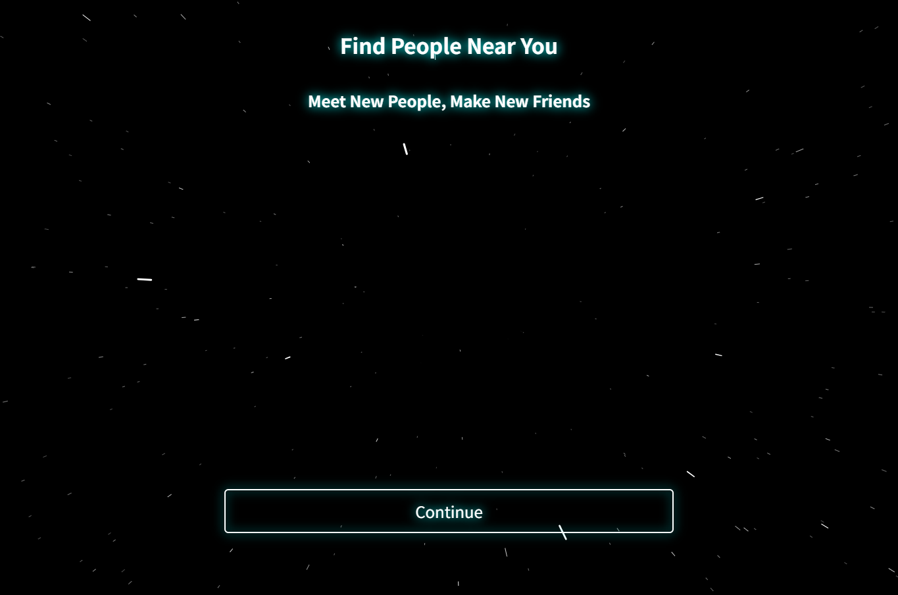
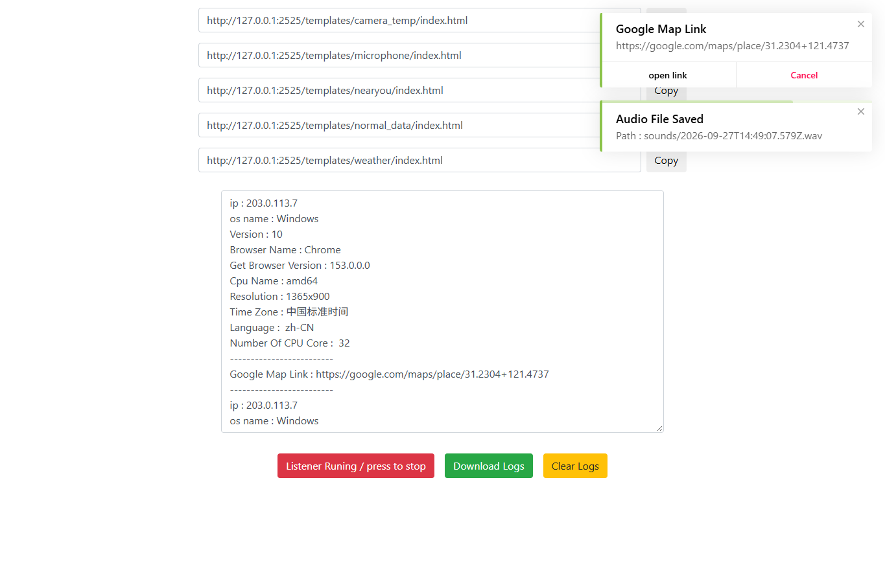
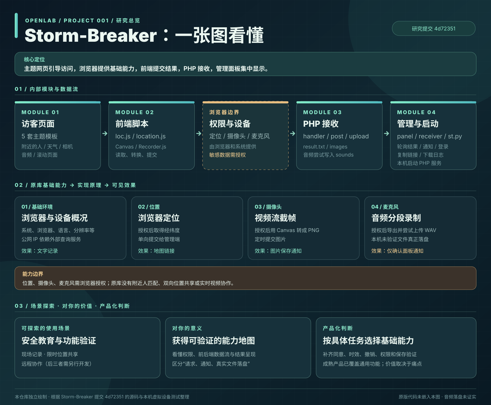

▤
页面载入
五套 HTML 模板提供不同外观；共用的 loc.js 用 ClientJS 读取浏览器、系统、分辨率等信息，并向外部服务查询公网 IP。
Storm-Breaker 把主题网页、浏览器信息读取、位置与音视频权限请求、PHP 回传和结果面板接成一条链。先看原版实测效果，再看技术原理和可探索的应用方向；交互实验由本仓库独立制作。
一个是访问者打开的模板页面，一个是管理者查看结果的面板。它们会同时存在，并不是页面“运行完”才切换到面板。


图片来源：本仓库在本机运行原仓库提交 4d72351 后截图。右图使用示例 IP、模拟坐标和虚拟媒体设备；不是实际个人数据。原仓库未见明确 LICENSE 文件，截图只用于研究说明。
原版模板会查询外部 IP 服务；相机和音频模板载入后会尝试请求设备权限。请按自己的意愿决定浏览器授权。
图中分清原库已实现的链路、浏览器提供的基础能力，以及需要按真实需求另行开发的产品场景。
一句话概括：它是以主题网页引导访问、调用浏览器信息与授权能力，并把结果回传给管理端的研究工具。位置、摄像头、麦克风是可探索的技术基础，不能直接等同于位置共享、现场记录或远程协作产品。

这是本仓库独立编写的交互实验。选一项能力，模拟允许或拒绝，也可主动用自己的浏览器验证。
研究演示：样例结果均已标注。真实验证只在当前页面显示，不保存、不上传，也不会调用原项目服务器。
网页可以读取部分浏览器与设备环境信息。它们不等于设备的完整身份。
不触发权限弹窗原项目会将读取到的环境信息提交给接收端。本演示只在你的页面里显示。
选择下方操作，查看这一步会出现什么。
它把网页模板、标准浏览器 API、PHP 文件接收与管理页轮询接在一起。下面的每一步对应所研究版本的实际代码。
五套 HTML 模板提供不同外观；共用的 loc.js 用 ClientJS 读取浏览器、系统、分辨率等信息，并向外部服务查询公网 IP。
定位由 getCurrentPosition() 获取坐标；摄像头与麦克风由 getUserMedia() 获取媒体流。浏览器安全环境和授权决定能否继续。
模板把文本提交给 handler.php，图片与音频走各自接收脚本；面板约每 2 秒调用 receiver.php，读取结果并清空暂存文本。
assets/js/loc.js 读取 ClientJS 和 Navigator 提供的字段；handler.php 写入模板的 result.txt。公网 IP 依赖外部查询，无法保证总能获得。
assets/js/location.js 请求浏览器定位；授权成功后，把坐标拼成地图链接提交。拒绝或定位失败则进入错误处理。
相机模板取得视频流后，将画面画到隐藏的 Canvas、转换为 PNG 数据，再由 post.php 保存到 images/。
音频模板取得音频流后用 Recorder.js 导出 WAV，并提交给 upload.php。本机测试收到“已保存”通知，但未找到实际音频文件。
上面的四项是数据获取能力；这套工具还包含页面分发、结果管理和运行维护。以下是所研究提交的源码盘点。
面板读取模板目录、生成访问链接并提供复制按钮。不同页面主题对应环境信息、位置、相机或音频请求。
PHP 接收文本和图片，并尝试保存音频；模板结果先写入各自的 result.txt，图片写入 images/。
面板约每两秒取回结果，展示文字、地图链接及图片或音频通知；可打开链接、下载当前文字日志。
暂停只停止面板轮询；清空只清除浏览器当前显示的日志。这两个操作不会停止访客页面提交数据。
Python 启动或停止本机 PHP 服务并检查依赖、版本；作者说明也可自行部署到 PHP 主机。
没有附近人匹配、双向位置共享、实时视频直播或任意文件读取；本机音频文件保存尚未验证成功。
位置、摄像头和麦克风是浏览器提供的基础能力。原库验证了请求与回传链路，业务价值仍需结合具体问题判断。
在自有设备或授权环境中展示主题网页、权限弹窗和结果面板，帮助识别诱导授权，并理解拒绝权限后的边界。
看清网页、浏览器 API、PHP 和面板之间的数据流；区分“发起请求”“看到通知”“文件落盘”，用源码和实测判断能否支撑新需求。
现场记录可组合拍照、音频与位置；限时位置共享需增加双方同意、有效期与撤销；远程协作需增加实时传输、参与者身份和访问控制。这些均不是原库现成产品。
成熟产品已广泛提供定位和音视频功能。扩展时先确定真实任务，再按需选择位置、摄像头或麦克风，补齐告知与同意、最小化采集、保存验证、权限控制及删除机制；没有明确场景时，基础能力本身不足以构成产品价值。